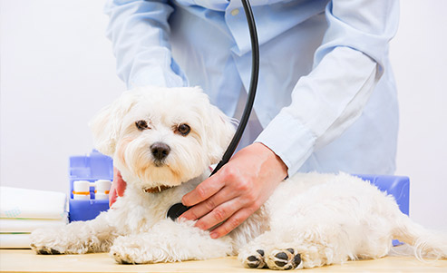
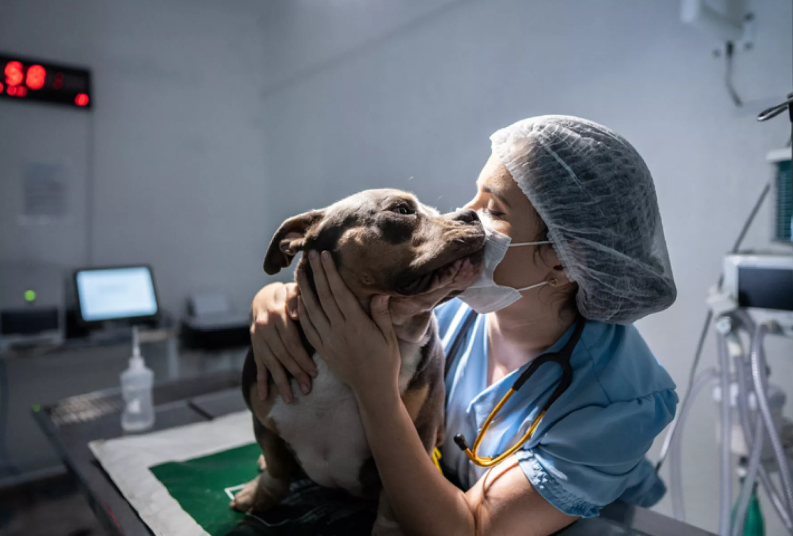
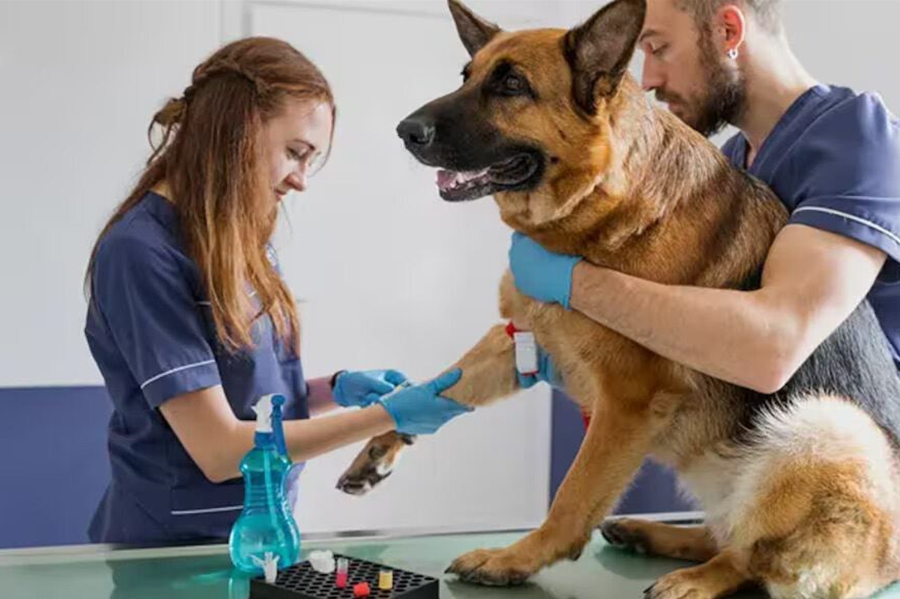
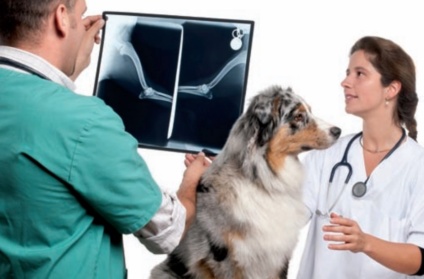
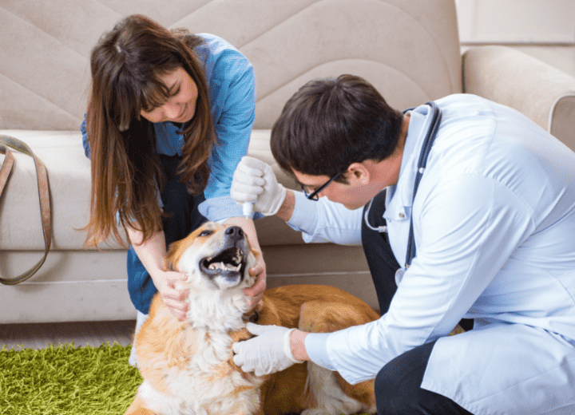
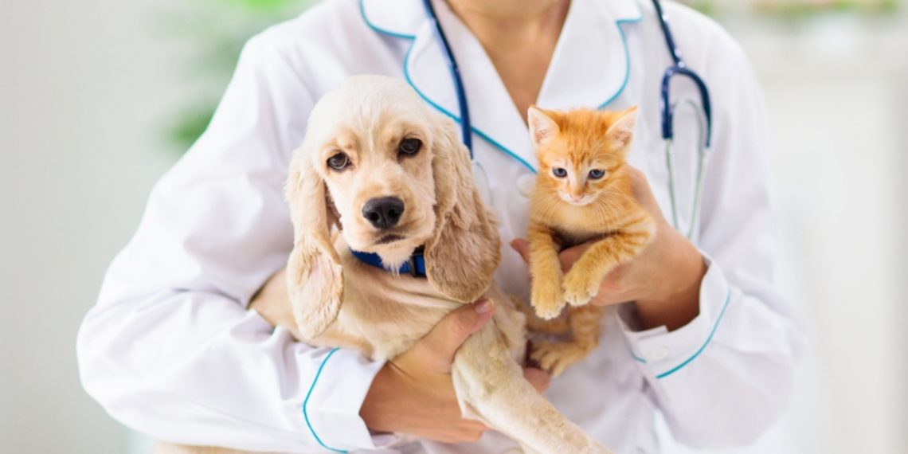
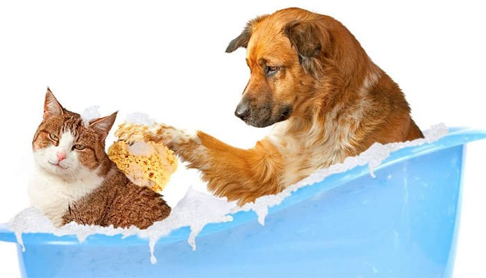

Servicios
Ofrecemos una amplia gama de servicios y productos de la más alta calidad, para satisfacer todas las necesidades de tus mascotas.
Consultorio Veterinario
Todos nuestros profesionales se encuentran disponibles para atender a tus mascotas en el horario de atención al público.
Vacunación
Disponemos de un amplio stock de vacunas para todo tipo de mascotas
La vacunación puede ser un proceso traumatizante tanto para los propietarios como para las mascotas. Algunas mascotas pueden ponerse nerviosas cuando notan que se dirigen a la veterinaria porque lo asocian con experiencias incómodas o dolorosas. Si querés evitar las molestias de llevar a tus mascotas para el control de vacunación, podés solicitar estos servicios veterinarios a domicilio.

Internación
Para los casos que fuera necesario disponemos de nuestro servicio de internación donde la atención de tu mascota quedará a cargo de nuestros especilistas.
Cirugía
Contamos con un completo y equipado quirófano para el sevicio de cirugía tanto de tejidos blandos como de traumatología.

Análisis Bioquímicos
La bioquímica desempeña un papel crucial en la detección temprana y el manejo de enfermedades en nuestras queridas mascotas. Nuestro compromiso es brindar un servicio de diagnóstico veterinario de vanguardia, garantizando la salud y el bienestar de los animales que tanto amamos.
Radiología
A nivel general, la técnica de radiografía emplea los rayos X para generar cierto tipo de imagen del interior de un cuerpo. Hay dos grandes categorías de radiografías: las convencionales, donde la impresión del resultado es sobre una placa fotográfica, y las digitales, que se visualizan en el ordenador, el móvil, la tablet u otras pantallas de dispositivos inteligentes.
Ecografía
Una ecografía veterinaria es una prueba de diagnóstico por imagen, al igual que la radiografía, del interior de nuestra mascota. Esto se realiza a través de un dispositivo de alta frecuencia cuyas ondas chocan en el interior del animal emitiendo así una imagen del interior.
Este procedimiento puede demorarse entre 30 a 40 minutos y es necesario que el dueño pueda ayudar a que la mascota se quede quieta mientras se realiza el examen.

Microchips
Si querés ponerle chip a tu mascota porque vas a viajar a un destino que lo exige o para incrementar su protección, hay muchos veterinarios que pueden ayudarte. Poner el chip es bastante sencillo, puesto que es similar a poner una vacuna del tipo subcutáneo (poca profundidad bajo la piel).
Veterinaria a domicilio
Las atenciones veterinarias a domicilio contemplan una serie de servicios que pueden estar a disposición del cliente: Revisiones generales, Vacunaciones, Asesorías nutricionales, Radiografías, Ecografías, Toma de muestras para análisis clínicos, Urgencias veterinarias, Suministro de medicamentos inyectables de emergencia y Traslados.
Guardias Veterinarias
Además del horario de atención al público, tenemos personal de guardia disponible las 24 horas.
Belleza canina y felina
Disponemos de personal especilizado para darte servicios de baño, peluquería y corte de uñas a perros y gatos.
Adopciones
Facilitamos el encuentro entre mascotas y hogares amorosos a través de nuestro servicio de adopción responsable.